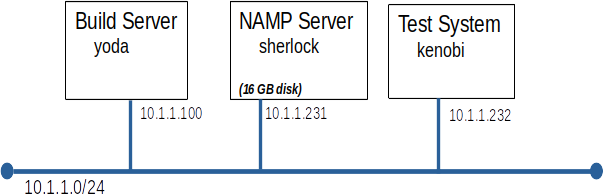

Lab 04 - Security Scanners and Intrusion Detection
Introduction
This week will in look at two related topics, security scanners and intrusion detection systems (IDS).
Security scanning is common practice. Many companies will not allow a system to be placed on their production network until it has passed a security scan. In this lab we will scan some of the servers we have built in previous labs. The most common security scanners inspect a system from the network looking for open ports and unprotected services.
In this lab we will also investigate the class of intrusion detection systems that monitor the nodes file system looking for changes to key files. The best know IDS of this type is Trip Wire.
Note: This is very serious business, only scan a system after obtaining explicit permission to do so from the system's owner.
Moving on...
Right then, let's see if anyone left their front door open.
Prerequisites:
Before you start this lab you must have:
- A working build server (yoda) from Lab 01
Before you start this lab you should be familiar with:
- Software installation with YUM
- TCP networking
- Common unix 'back-doors' (we will review at the start of the lab)
- The find command (we will review at the start of the lab)
- The diff command (we will review at the start of the lab)
- Check-sums (like the md5sum command)
- Basic shell scripting (if you want to build a slick IDS)
Grading:
Answer the questions found at the end of the lab.
Overview:
Bullwinkle, out intrepid IT director, has hired security consultants Boris and Natasha to performing security scans on all of our production servers.
Smart cookie that you are, you decide to experiment with NMAP on a test server before doing anything that touches production.
Paranoid admin that you are, you decide to install an IDS on at least some of your systems, so you can see if Boris and Natashia leave any presents behind.
Your basic plan is:
- Build a test server using the standard Acme configuration:
- hostname: kenobi
- ip address: 10.1.1.32
- standard Acme build
- Build a server to host NMAP and Nessus
- hostname: sherlock
- ip address: 10.1.1.31
- standard Acme build
- 16GB disk
- Run test scans against yoda and kenobi to become familiar with NMAP
- Build a simple IDS and test it using trojan horse programs supplied by your instructor
- Write a report detailing your findings
Part A: Build The Servers:
This should be getting pretty easy by now. Just build the servers to look like those in the diagram.

Notes:
- You can use dhcp to assign the IP address and hostname if you like
- The standard Acme Corp. Kickstart file developed in Lab 01 should be fine for both kenobi and sherlock
- Install NMAP on sherlock (it should already be in your Acme Base repo on yoda)
yum install nmap
- Grow the / file system to make room for the Nessus install.
- Grow the Logical Volume on which / is stored
lvextend /dev/VG01/LV_root -l +100%FREE
- Grow the / file system
resize2fs /dev/mapper/VG01-LV_root
- Check our work (should now be over XX GB )
df -h | grep LV_root
Parts B through D deal with scanners...
Part B: Run Test Scans
Before we let NMAP loose on our network, we want to know how it behaves and what to expect. By running NMAP against a test server, kenobi, we can determine how NMAP works and we can have confidence that running NMAP won't break the server we are scanning. We can also make changes to kenobi between scans that would be impossible to make on production servers (like lowering the firewall)
In many steps you are given a choice between two commands, look at the man page and pick the appropriate one.
Note: all nmap commands are to be run from sherlock
Scan with the firewall down
- Log on to kenobi and disable the local firewall
systemctl stop firewalld
- Run the simplest possible NMAP scan against kenobi
nmap -n -v -sL 10.1.1.232
or
nmap -v -sL 10.1.1.232
- Let's find out a little more, run a simple Port Scan
nmap -n -v -sT 10.1.1.232
or
nmap -n -v -sS 10.1.1.232
- Can we tell exactly what service is running on each of those open ports?
nmap -n -v -sT -sV 10.1.1.232
- Can we tell what O/S is running?
nmap -n -v -O 10.1.1.232
or
nmap -n -v -O --osscan-guess 10.1.1.232
Scan with the firewall up
- Log on to kenobi and enable the local firewall
service iptables start
- Run the simplest possible NMAP scan against kenobi
nmap -n -v -sL 10.1.1.232
or
nmap -v -sL 10.1.1.232
- Let's find out a little more, run a simple Port Scan (Feel free to ctl-c a scan that looks like it is taking too long.)
nmap -n -v -sT 10.1.1.232
or
nmap -n -v -T4 -sT 10.1.1.232
- Why do scans take longer when the system to be scanned is behind a firewall?
- Can you tell from the NMAP out-put if a firewall is in place?
- What does the -T4 switch do?
- Put it all together.
nmap -n -v -A -T4 10.1.1.232
Part C: Scan yoda
While we are in the neighborhood, let's scan yoda.
- Run the all singing, all dancing nmap command against yoda
nmap -n -v -A -T4 10.1.1.100
Part D: Late Breaking News Flash !!!
Freddy, the sushi loving Windows Administrator who sits down the hall, overheard Boris and Natasha at lunch. They were talking about using Nessus to scan your servers.
We really should have a look at Nessus. Nessus is available as a trial. A valid email address is required to register for the trial, use your Mohawk email.
Installing and running Nessus is an interesting exercise, but not a core component of this course. Installing and configuring Nessus is optional. You can answer the lab questions based on the sample Nessus report below.
- Optional Steps:
- Nessus can be obtained from Tenable Software
- Please use the Nessus Expert license
- Install Nessus on sherlock.
- Nessus scans take longer than the nmap command we have been using, just scan yoda and kenobi.
- Required Steps:
Parts E through H deal with intrusion detection...
Part E: Foundation Skills
To build a simple IDS we need to have strong skills with 3 commands: find; md5sum; and diff
The find command
- Open a putty session on your Windows workstation and ssh to kenobi as root
- Write a find command to find all files that contain the string rc anywhere in their name
Hints:
- -name
- put the file name in quotes to prevent globbing
- Expand upon your find command modifying it to perform a long file listing (ls -l) on each file it finds (hint: -exec is really picky about the trailing \;)
- Write a find command to perform a long listing (ls -l) on all executable files on the system. (note: you must find executable by owner, group, or other)
- Write a find command to perform a long listing on all set-uid programs
The md5sum command
- Create a small text file named foo.txt containing the first thought that pops into your head
- Run md5sum on foo.txt
- Change the contents of foo.txt very slightly
- Run md5sum on foo.txt again
- Compare the output from the two md5sum commands
- Write a find command to execute md5sum on every executable in the file system
The diff command
- Create a text file bar.txt containing a list of your 10 closest friends, one on each line
- Copy bar.txt to bar_a.txt
- Execute:
diff bar.txt bar_a.txt
- Change the spelling of one friend's name in bar.txt and run diff again
- Add a friend to bar_a.txt and run diff again
- Remove two friends from bar_a.txt and run diff again
Part F: Build an IDS
Congratulations, you now have the basic skills required to build a simple IDS. Our strategy will be to store the md5 checksum for each key system file. We can then check any file's md5 checksum against its known good value to see if the file has been tampered with.
- Create /acme_tools/ids to hold your IDS scripts and data
- Write a shell script named /acme_tools/ids/take_inventory.sh to create a list of key system files and their md5 checksum
- the file must contain the out-put of the md5sum command for:
- all executables (files only not directories);
- the entire contents of /etc (files only not directories)
- pipe the out-put of each find through the sort command (this will make comparisons easier)
- store the results in time stamped file /acme_tools/ids/inventory.<yyyymmdd_hhmmss>
The contents of inventory.20120110.13:14:22 should look something like this:
2e34bf59ff292b2e03a0701a865881cf /etc/pam.d/reboot
6901806c889b53033751da610f79e8de /etc/pam.d/vsftpd
af140f3d3ae7fcf504f103e72256cfef /etc/pam.d/other
- Run /acme_tools/ids/take_inventory.sh
- Make a small change to any file under /etc
- Run /acme_tools/ids/take_inventory.sh again
- Run diff on the two inventory files produced by steps 3 and 5
Note:
- Your find command will complain about some entries under /proc
- Your md5sum command (executed by find) will complain about /sys/devices/system/memory/probe
- It is safe to ignore these complaints.
Here's a change to use your skills for good and for evil. It is also a chance to practice your skills before tackling "Spy vs. Professor"
- Exchange root passwords with your lab partner.
- Log onto each other's server and add one or two back-doors, do not tamper with the contents of /acme_tools/ids
- Return to your own server and see if you can find the back-doors left by your partner
- Compare notes with your partner
- If required get your partner's help to remove the back-doors
Part H: Spy vs. Professor
Here is your chance to test your IDS against a couple of trojan-horse programs written by your instructor.
- Download and install trojan-horse programs
- Run trojan_horse_a and see if you and your IDS can spot and close the back-doors.
- Have a look at /tmp/
- Log in as alice and try running /tmp/tmp_system.log
- Can you find an other file with the same md5 check-sum as /tmp/tmp_system.log ?
- Run trojan_horse_b and see if you and your IDS can spot and close the back-doors. (This one's trickier)
Part I: Grading
Answer these questions and submit them to Canvas.
Port scanner
- Submit a copy of your e-mail to Rocky from Part D.
IDS questions
- What back-doors where left by trojan_a?
- What back-doors where left by trojan_b?
- What extra trick did trojan_b have up its sleeve?
Each report must be in HTML or PDF format.